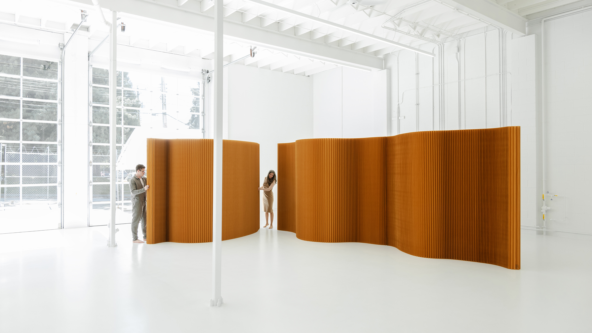
Quando l’uomo iniziò a stanziarsi in un unico luogo, maturò la necessità di creare uno spazio sicuro, chiuso, un riparo da tutto ciò che era il “fuori”, certamente non aveva pensato a qualcosa di suddiviso, “sottratto” dall’intero; nella sua idea non c’era il voler suddividere le funzioni private in base al momento della giornata. Il rifugio nacque come uno spazio coperto, dove trascorrere la notte, al riparo dalle intemperie e non voleva essere qualcosa di privato ma una dimensione sociale in cui la comunità potesse rifugiarsi.
Adesso immaginiamo di fare un salto temporale ai giorni nostri: cosa è accaduto? Nella stragrande maggioranza dei casi, complici le crisi economiche che si sono verificate dall’inizio di questo secolo - anzi millennio! - che hanno impedito una revisione radicale delle abitazioni, le nostre case conservano i tratti impressi da chi le ha costruite e pertanto figlie di un'esigenza sociale ed economica di un'epoca specifica, ormai superata dai ritmi attuali.
Ma adesso dobbiamo porci un’altra domanda: cosa è accaduto dal diffondersi del pensiero dal genio di Le Corbusier a oggi? Come siamo passati dalla pianta libera, flessibile, in continuità con la dimensione esterna, quella pubblica e attenta alla dimensione sociale umana, a una distribuzione estremamente partizionata e rigida, caratterizzata da ampi spazi distributivi, che vanno ben oltre il limite dell’accettabilità se comparati alla dimensione complessiva disponibile?
E ancora una volta, come nella stragrande maggioranza dei casi la risposta è semplice: qualcuno, anzi molti, hanno voluto trarre profitto. Molto, troppo. E i pilastri di Le Corbusier, che consentivano di liberare la pianta dai vincoli strutturali, sono stati tamponati, nascosti in setti murari, creando corridoi con lo scopo di incastrare nel modo più efficiente possibile il maggior numero di vani in piante rettangolari allungate, ricavate in interi quartieri di edifici alti e densi. Gli ambienti venivano separati in virtù dell’ideale di specializzazione degli spazi, per cui si riteneva inaccettabile che gli odori della cucina, volendo citare un esempio a caso, si diffondessero oltre l’ambiente predisposto, vista la mancanza di impianti tali da evitare che questo accadesse; si buttavano via metri e metri per dedicare spazi agli ospiti più o meno occasionali, si separavano ben oltre il necessario le funzioni private.
E tutto è rimasto fermo fino ai giorni nostri, vittima di quel retaggio culturale mai rimesso in discussione - del resto, non c’erano le risorse economiche per poterlo fare… - poi è scattato qualcosa: la pandemia Covid-19 ha palesato la necessità di creare una nuova dimensione dell’abitare, quella lavorativa, non compartimentata, perchè lo spazio a disposizione non lo consentiva, ma fluida e tale da mischiare le attività quotidiane in un tutt’uno, un susseguirsi di azioni di un’unica dimensione, quella dell’uomo occidentale moderno, che vive in precario equilibrio tra la sfera privata e quella lavorativa, senza tuttavia rendersi conto che queste due dimensioni non viaggiano su binari paralleli ma vivono in un delicatissimo equilibrio di intersezioni e divergenze.
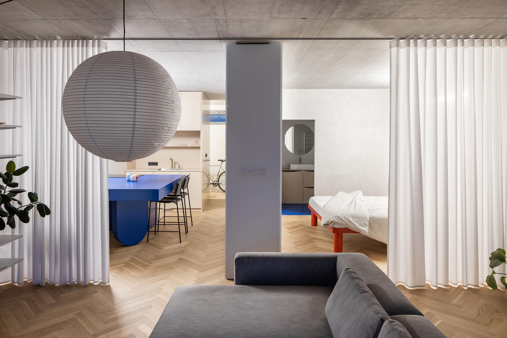
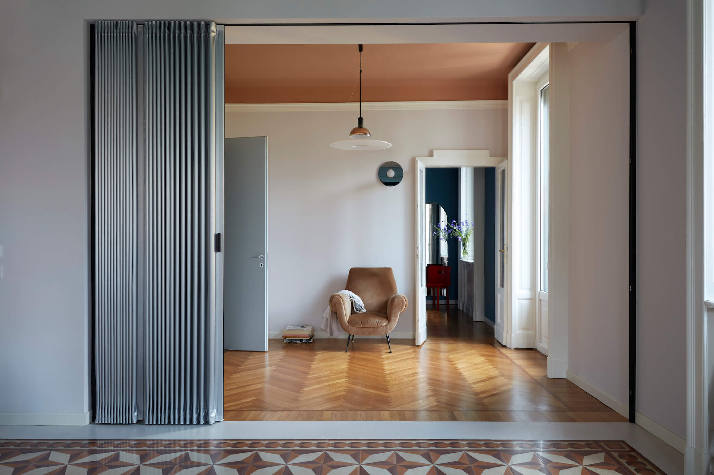
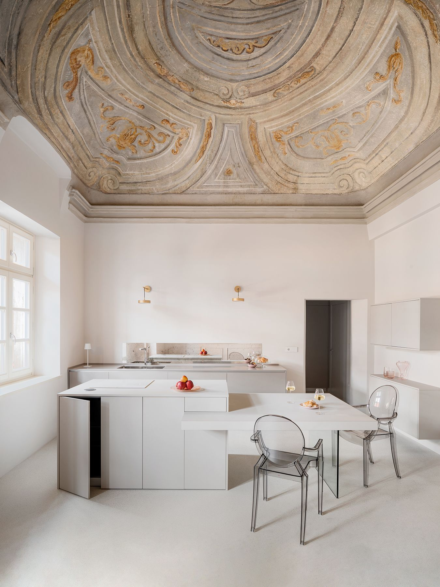
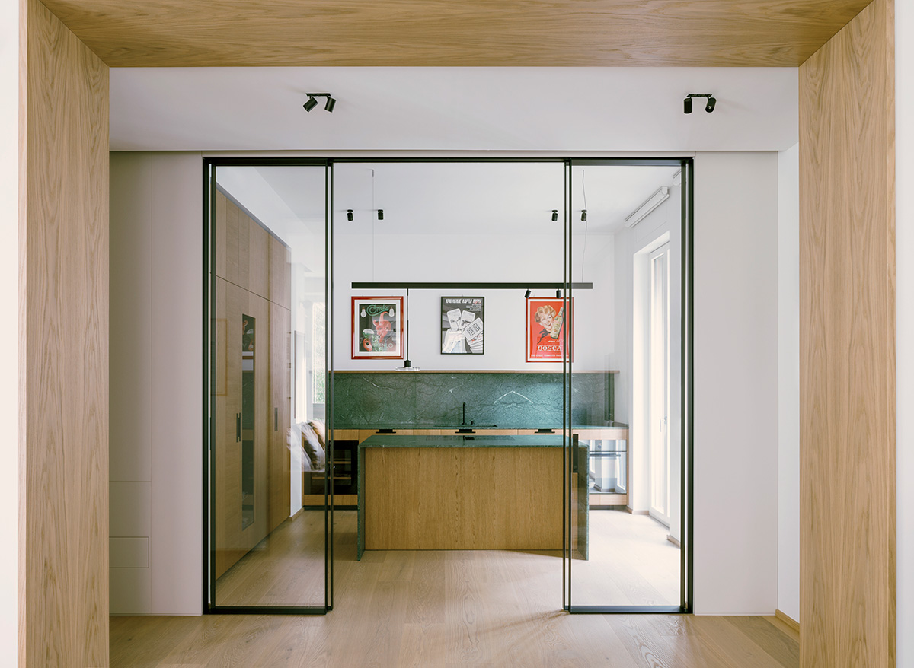
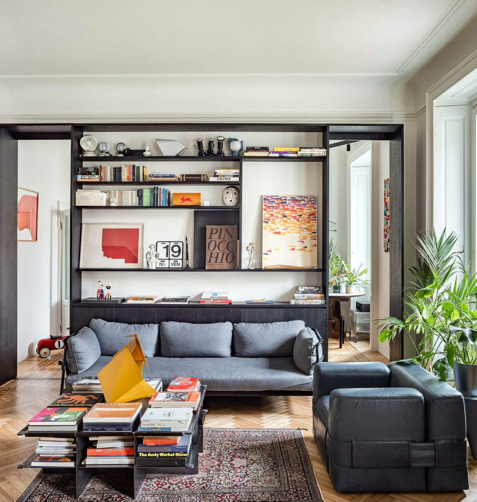
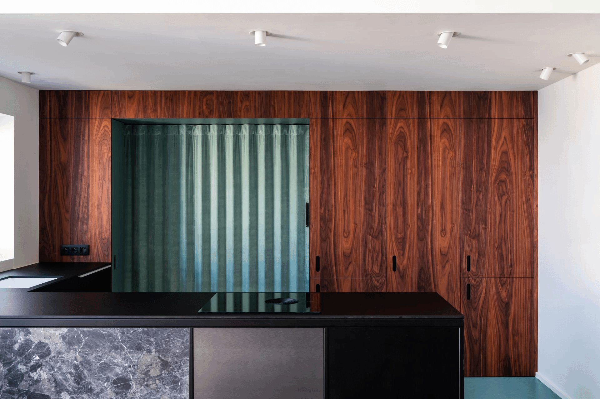
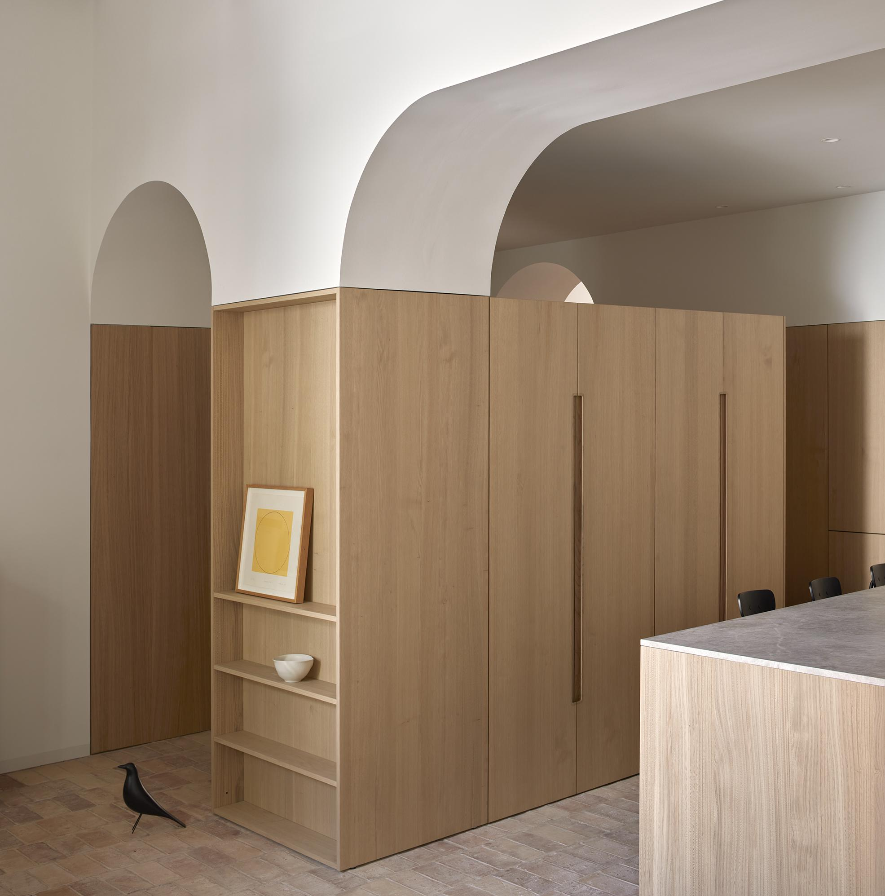
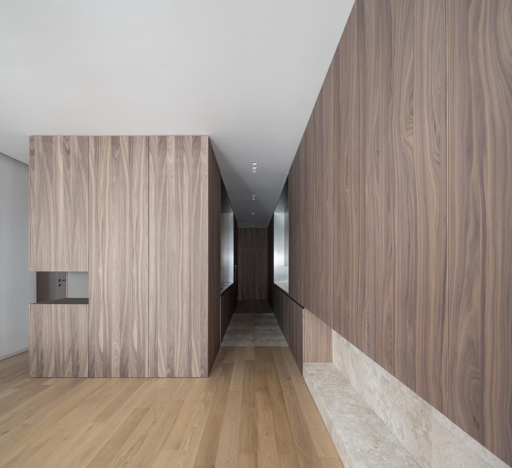
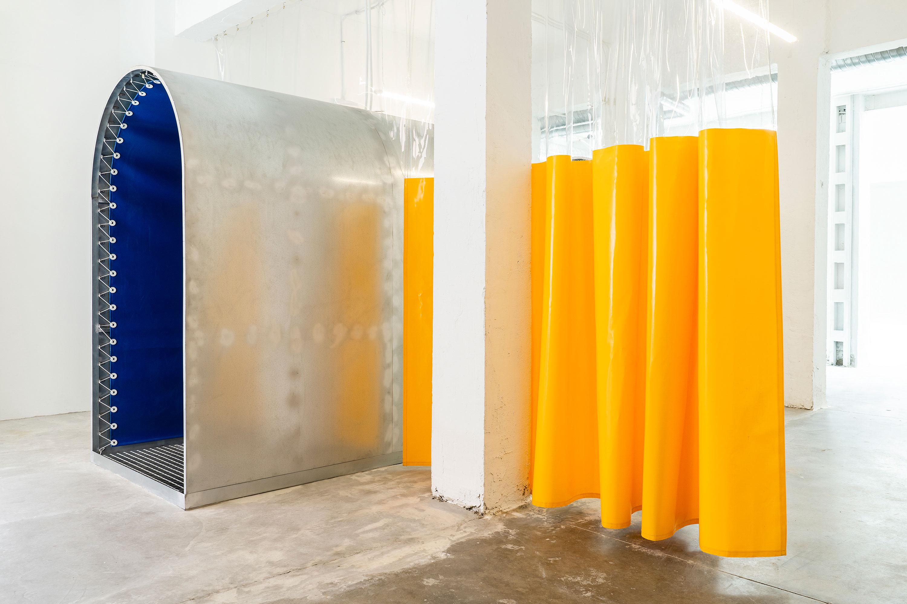
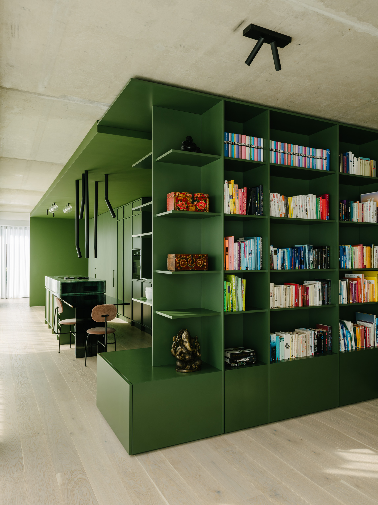
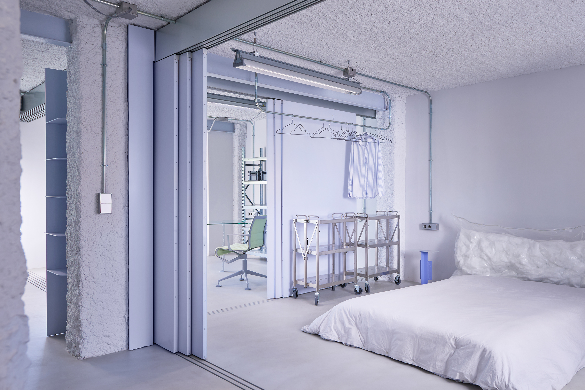